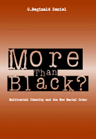

<body bgcolor="#FFFFFF" text="#000000" link="#0000FF" vlink="#CC0000" alink="#CC0000"><center><hr width="350" size="1" align="center" noshade>Dismantling the edifice of white supremacy<hr width="350" size="1" align="center" noshade><p><a href="https://cdcshoppingcart.uchicago.edu/Cart/ChicagoBook.aspx?ISBN=9781566399081&&PRESS=temple" target="_top">Buy this book!</a> | <a href="https://cdcshoppingcart.uchicago.edu/Cart/Cart.aspx?PRESS=temple" target="_top">View Cart</a> | <a href="https://cdcshoppingcart.uchicago.edu/Cart/Cart.aspx?PRESS=temple" target="_top">Check Out</a></p><p></p></center><!--none//--><h1>More Than Black?</h1>
<H2>Multiracial Identity and the New Racial Order</H2>
<h3>G. Reginald Daniel</h3>
<P>cloth 1-56639-908-4 $69.50, Dec 01, <FONT COLOR=#990033>Out of Stock Unavailable</FONT>
<br>paper 1-56639-909-2 $36.95, Dec 01, <FONT COLOR=#990033>Available</FONT>
<br>Electronic Book 1-43990-483-9 $36.95 <FONT COLOR=#990033>Out of Stock Unavailable</FONT>
<BR> 280 pp
7x10
1&nbsp;figure
</P><BLOCKQUOTE><I>"This book is a major contribution to understanding multiracial identity, a topic of increasing importance. Professor Daniel places the issues in a broad historical-comparative perspective, focusing primarily on mixed-race persons in America with some African ancestry. A leader in the multiracial identity movement, he has written a carefully researched, informative, and balanced treatment."</I>
<br>&#151<b>F. James Davis</b>, Professor of Sociology Emeritus, Illinois State University, and author of <I>Who Is Black?</I><I></I></BLOCKQUOTE>
<p>In the United States, anyone with even a trace of African American ancestry has been considered black. Even as the twenty-first century opens, a racial hierarchy still prevents people of color, including individuals of mixed race, from enjoying the same privileges as Euro-Americans. In this book, G. Reginald Daniel argues that we are at a cross-roads, with members of a new multiracial movement pointing the way toward equality.
<p>Tracing the centuries-long evolution of Eurocentrism, a concept geared to protecting white racial purity and social privilege, Daniel shows how race has been constructed and regulated in the United States. The so-called one-drop rule (i.e., hypodescent) obligated individuals to identify as black or white, in effect erasing mixed-race individuals from the social landscape. For most of our history, many mixed-race individuals of African American descent have attempted to acquire the socioeconomic benefits of being white by forming separate enclaves or "passing." By the 1990s, however, interracial marriages became increasingly common, and multiracial individuals became increasingly political, demanding institutional changes that would recognize the reality of multiple racial backgrounds and challenging white racial privilege.
<p><I>More Than Black?</I> regards the crumbling of the old racial order as an opportunity for substantially more than an improvement in U.S. race relations; it offers no less than a radical transformation of the nation's racial consciousness and the practice of democracy.
<BR>&nbsp;<h2>Excerpt</h2><P>Excerpt available at <a href="http://www.temple.edu/tempress">www.temple.edu/tempress</a></p>
<BR>&nbsp;<h2>Reviews</h2>
<p><I>"</I>More Than Black?<I> is a splendid analysis of how the American nation built walls to keep people apart and how these walls are being breached and dismantled. Writing amidst a tidal wave of racial boundary crossing, the author brilliantly dissects the rise of multiracial identities and shows how this has threatened many African Americans for whom mutually exclusive racial categories, first developed as a white racial weapon, have served their purposes in an era of entitlements, quotas, and set asides. Daniel has done a great service in helping us think about the future of a racially democratic society."</I>
<br>&#151<b>Gary B. Nash</b>, Professor of History, UCLA and Director, National Center for History in the Schools
<p><I>"Thankfully, in this increasingly diverse nation, deep questions about what 'white' and 'black' mean are finally coming to the fore. In an original analysis, Daniel thoroughly examines the long history of multiracial ancestries and communities in the U.S. Framing issues sociologically rather than psychologically, he probes how Eurocentrism has shaped past and present struggles over multiracial identities. Often working against the centuries-old white-racist order, struggles to assert multiracial identities began soon after the first interracial liaisons in the 1600s and continue today in the growing social and political movements to build a truly democratic multiracial society."</I>
<br>&#151<b>Joe R. Feagin</b>, Graduate Research Professor, University of Florida and author of <I>Racist America</I>
<p><i>"...a first in giving shape to an intellectual and scholarly agenda for students of multiracial identity."</i>
<br>&#151<b><i>The Journal of Ethnic and Migration Studies</i></b>
<p><i>"This work raises some interesting philosophical questions.... recommended and should be a spur to further research."</i>
<br>&#151<b><i>MultiCultural Review</i></b>
<p><i>"...this book deserves to be widely read. Whether or not one agrees with his analysis or predictions, Daniel has produced a tour de force on multiracialism that will have to be reckoned with in years to come."</i>
<br>&#151<b><i>Social Forces</i></b>
<p><i>�The book�s strength is in its examination of how the categorization of multiracial persons in the United States has shifted as American culture has evolved.�More Than Black elegantly illuminates a relatively ignored topic�[it] is a contemplative and timely addition to the library of those interested in racial identity. It also provides a provocative look at the conflicting pressures experienced by multiracial individuals as their identity is repeatedly recategorized to serve social and political agendas�</i>More Than Black<i> provides insight into the history of multiracial identity within the United States and it inspires reflective thought on future conceptions of multiracial identity.�</i>
<br>&#151<b><i>Journal of African American Men</i></b>
<BR>&nbsp;<h2>Contents</h2><P>
<p>Preface
<br>Acknowledgments
<br>Introduction
<p><b>Part I: White Over Black</b>
<br>1. Eurocentrism: The Origin of the Master Racial Project
<br>2. Either Black or White: The United State and the Binary Racial Project
<p><b>Part II: Black No More</b>
<br>3. White by Definition: Multiracial Identity and the Binary Racial Project
<br>4. Black by Law: Multiracial Identity and the Ternary Racial Project
<p><b>Part III: More than Black</b>
<br>5. The New Multiracial Identity: Both Black and White
<br>6. The New Multiracial Identity: Neither Black nor White
<br>7. Black by Popular Demand: Multiracial Identity and the Decennial Census
<p><b>Part IV: Black No More or More than Black?</b>
<br>8. The Illusion of Inclusion : From White Domination to White Hegemony
<br>9. The New Millennium: Toward a New Master Racial Project
<p>Epilogue: Beyond Black or White: A New United States Racial Project
<br>Notes
<br>Index
</P><BR>&nbsp;<H2>About the Author(s)</H2>
<table><tr><td valign="top"><img src="/tempress/authors/1470_au.gif" height="90" width="75"></td><td width="100%" valign="middle"><p><b>G. Reginald Daniel</b> is an Assistant Professor of Sociology at the University of California, Santa Barbara.</P></td></tr></table>
<BR><H2>Subject Categories</H2>
<p><A HREF="/tempress/sociology.html" TARGET="_top">Sociology</a>
<BR><A HREF="/tempress/african.html" TARGET="_top">African American Studies</a>
</p>
<p align="center"><a href="https://cdcshoppingcart.uchicago.edu/Cart/ChicagoBook.aspx?ISBN=9781566399081&&PRESS=temple" target="_top">Buy this book!</a> | <a href="https://cdcshoppingcart.uchicago.edu/Cart/Cart.aspx?PRESS=temple" target="_top">View Cart</a> | <a href="https://cdcshoppingcart.uchicago.edu/Cart/Cart.aspx?PRESS=temple" target="_top">Check Out</a></p><p><font face="Arial" size="1"><a href="copyright.html" onMouseOver="window.status='Web Copyright Policy';return true;" onMouseOut="window.status=''" title="Web Copyright Policy">&copy;</a> 2015 <a href="http://www.temple.edu" target="new" onMouseOver="window.status='Link to Temple University home page';return true;" onMouseOut="window.status=''" title="Link to Temple University home page">Temple University</a>. All Rights Reserved. http://www.temple.edu/tempress/titles/1470_reg.html</font></p>